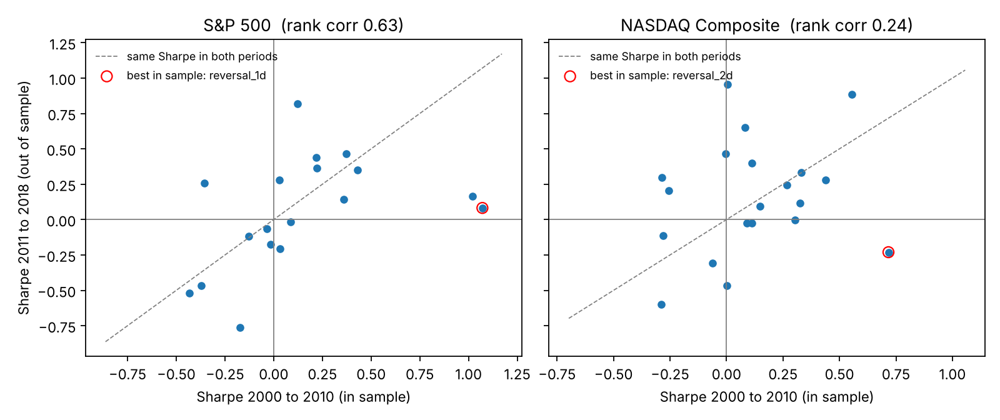

Quant & finance · Statistics
Signal Robustness Lab
Do classic trading signals survive honest statistical testing?
- 1.07 → 0.08
- Sharpe of the best 2000–2010 signal, then 2011–2018
- 1.75 bps
- Break-even cost of NASDAQ's overnight edge
- 96%
- S&P 500 opens before 2006 found copied from the prior close
- Tested 20 classic daily signals on the S&P 500 and NASDAQ, 1999 to 2018: chosen on 2000 to 2010, judged once on 2011 to 2018.
- Newey-West t-tests, block bootstrap Sharpe intervals, Bonferroni and Benjamini-Hochberg corrections, and a studentized SPA test I wrote after finding the library version ignored studentization.
- Two raw "discoveries" (p = 0.006 and 0.014) failed correction. NASDAQ's overnight return is real (out of sample p = 0.002) but cannot survive trading costs.
Limitation I report: index levels are not tradable instruments, and the study uses a single train and test split.
